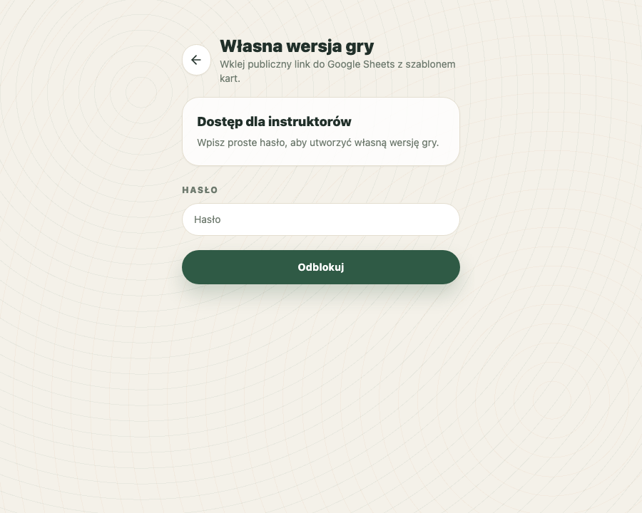

Wersja dla harcerzy
Gotowy zestaw pytań językowo dostosowany do kursów męskich. Kreator gry umie utworzyć z niego link i QR kod jednym kliknięciem.
Podejrzyj pytania dla harcerzy2. Stwórz własną grę
Instruktor może wybrać gotowy zestaw dla harcerzy albo harcerek, albo przygotować arkusz z własnymi sytuacjami. Aplikacja tworzy unikalny adres oraz QR kod dla uczestników.

Gotowy zestaw pytań językowo dostosowany do kursów męskich. Kreator gry umie utworzyć z niego link i QR kod jednym kliknięciem.
Podejrzyj pytania dla harcerzyGotowy zestaw pytań językowo dostosowany do kursów żeńskich. Kreator gry umie utworzyć z niego link i QR kod jednym kliknięciem.
Podejrzyj pytania dla harcerekInstruktor kopiuje template, wpisuje własne sytuacje i wkleja publiczny link do arkusza.
Podejrzyj template pytańinstruktor.Cards. Aktywne karty oznacz statusem Active.
Własna gra jest snapshotem arkusza. Późniejsze zmiany w Google Sheets nie zmienią już
wygenerowanej gry. Link działa przez 14 dni. Hasło instruktor chroni tylko
ekran tworzenia, a nie samą rozgrywkę. Gotowe warianty dla harcerzy i harcerek korzystają
z publicznych arkuszy Google Sheets jako źródła do wygenerowania 14-dniowej gry.
-3 do 3; większość kart powinna mieć mały albo średni wpływ.Draft przy kartach, które nie są jeszcze gotowe.